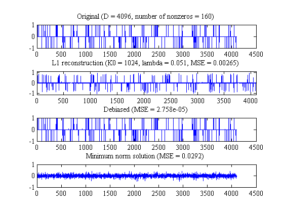

Figure 1 from Figueiredo'07, "Gradient projection for sparse reconstruction"
PMTKauthor Figueiredo PMTKurl http://www.lx.it.pt/~mtf/GPSR/ PMTKmodified Kevin Murphy PMTKslow
% This file is from pmtk3.googlecode.com setSeed(0); % n is the original signal length n = 2^12; % k is number of observations to make k = 2^10; % number of spikes to put down % n_spikes = floor(.01*n); n_spikes = 160; % random +/- 1 signal f = zeros(n,1); q = randperm(n); f(q(1:n_spikes)) = sign(randn(n_spikes,1)); %f(q(1:n_spikes)) = randn(n_spikes,1); % measurement matrix R = randn(k,n); % orthonormalize rows R = orth(R')'; % noisy observations sigma = 0.01; y = R*f + sigma*randn(k, 1); % regularization parameter tau = 0.1*max(abs(R'*y)); [x_l1_ls,status,history] = l1_ls(R,y,2*tau,0.01); w = x_l1_ls; aw = abs(w); zz = find(abs(w) <= 0.01*max(aw)); ndx = setdiff(1:n, zz); wdebiased = zeros(n,1); X = R; %wdebiased(ndx) = pinv(X(:,ndx))*y; wdebiased(ndx) = X(:,ndx)\y; wfull = X'*y; % since X is orthogonal %pinv(X)*y; % X'*y; % X\y; wsparse = w; wdeb = wdebiased; wls = wfull; figure scrsz = get(0,'ScreenSize'); set(gca,'Position',[10 scrsz(4)*0.1 0.9*scrsz(3)/2 3*scrsz(4)/4]) subplot(4,1,1) plot(f,'LineWidth',1.1) top = max(f(:)); bottom = min(f(:)); v = [0 n+1 bottom-0.05*(top-bottom) top+0.05*((top-bottom))]; set(gca,'FontName','Times') set(gca,'FontSize',14) title(sprintf('Original (D = %g, number of nonzeros = %g)',n,n_spikes)) %axis(v) set(gca,'ylim',[-1 1]) subplot(4,1,2) plot(wsparse,'LineWidth',1.1) set(gca,'FontName','Times') set(gca,'FontSize',14) axis(v) title(sprintf('L1 reconstruction (K0 = %g, lambda = %5.3g, MSE = %5.3g)',... k,tau,(1/n)*norm(wsparse-f)^2)) subplot(4,1,3) plot(wdeb,'LineWidth',1.1) set(gca,'FontName','Times') set(gca,'FontSize',14) top = max(f(:)); bottom = min(f(:)); v = [0 n+1 bottom-0.15*(top-bottom) top+0.15*((top-bottom))]; %axis(v) set(gca,'ylim',[-1 1]) title(sprintf(... 'Debiased (MSE = %0.4g)',(1/n)*norm(wdeb-f)^2)) subplot(4,1,4) plot(wls,'LineWidth',1.1) set(gca,'FontName','Times') set(gca,'FontSize',14) title(sprintf('Minimum norm solution (MSE = %0.4g)',(1/n)*norm(wls-f)^2)) top = max(wls(:)); bottom = min(wls(:)); v = [0 n+1 bottom-0.15*(top-bottom) top+0.15*((top-bottom))]; %axis(v) set(gca,'ylim',[-1 1]) printPmtkFigure('sparseSensingDemo')
Solving a problem of size (m=1024, n=4096), with lambda=1.01929e-01 ----------------------------------------------------------------------------- iter gap primobj dualobj step len pcg iters 0 3.29e+01 4.06774e+01 7.72870e+00 Inf 0 1 2.26e+01 3.03156e+01 7.72870e+00 1.0e+00 1 2 2.23e+01 3.00092e+01 7.72870e+00 5.0e-01 1 3 1.84e+01 2.60989e+01 7.72870e+00 5.0e-01 2 4 1.40e+01 2.35402e+01 9.49669e+00 5.0e-01 2 5 8.06e+00 1.98114e+01 1.17465e+01 5.0e-01 4 6 4.33e+00 1.74732e+01 1.31408e+01 5.0e-01 7 7 2.00e+00 1.58017e+01 1.38020e+01 5.0e-01 7 8 1.12e+00 1.52604e+01 1.41416e+01 5.0e-01 11 9 5.37e-01 1.48638e+01 1.43265e+01 5.0e-01 10 10 2.97e-01 1.47249e+01 1.44283e+01 5.0e-01 11 11 1.43e-01 1.46261e+01 1.44832e+01 5.0e-01 10 Absolute tolerance reached.